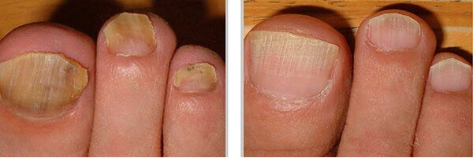
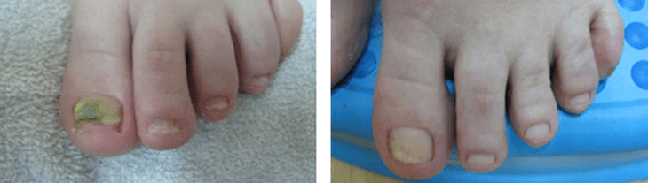
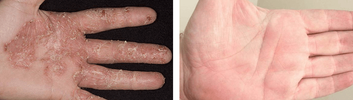
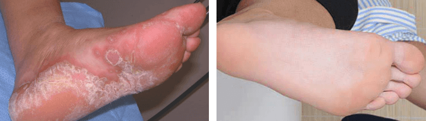
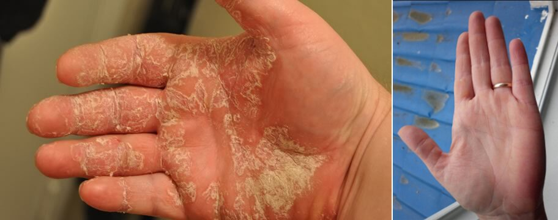
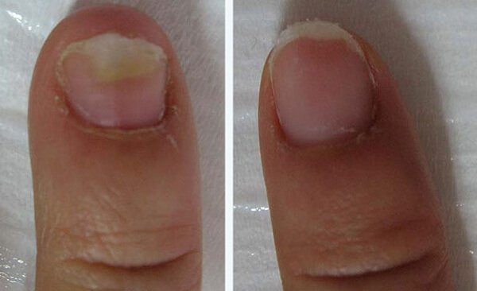
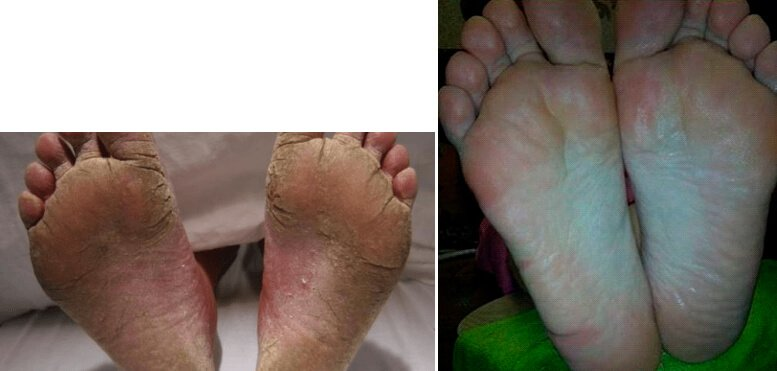
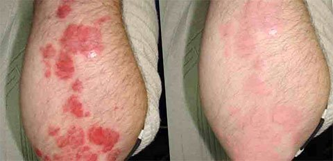
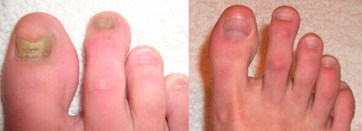
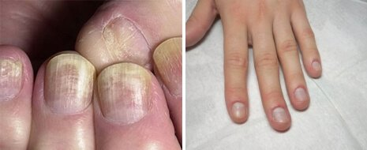

Avance científico contra la infección fúngica. prevención y protección al 100%
Científicos de todo el mundo han hecho sonar todas las alarmas. Según las estadísticas, el 57% de la población de España tiene hongos en la piel y las uñas. ¡Una de cada dos personas está en riesgo!
Aparte de que los hongos no son nada atractivos a la vista y te limita mucho a la hora de ponerte ciertas prendas de ropa, también puede causar enfermedades graves. Se han descubierto casos en que los hongos causaron el envenenamiento de la sangre o infecciones crónicas en la piel. Además, existen muchos casos en los que una infección micótica descuidada ha obligado a realizar un injerto de piel e incluso a amputar las extremidades.
Por fin, la ciencia moderna ha encontrado una solución: el crema . Después de investigar a fondo sobre los hongos, sus métodos de prevención y los suplementos que ya existían en el mercado, los científicos de la Asociación de la Piel Sana crearon un remedio antibacteriano único.
ya ha sido nombrado "el futuro de la piel sana de la humanidad". No existe ningún otro método de prevención para las infecciones fúngicas que sea igual de eficaz.
El doctor Álex Beltrán, científico médico, especialista en dermatología y uno de los creadores de nos lo ha contado todo.
"Los indicadores clave de eficacia han superado todas nuestras expectativas
Cuando estábamos creando , nuestro principal objetivo no era introducir otro recurso igual de ineficaz que todos los que había ya en el mercado. Nos preocupa la salud de la gente.
Es necesario acabar con los hongos y se puede hacer hoy mismo. Por tanto, el producto fue desarrollado por los principales profesionales y se utilizaron los mejores componentes.
Trabajamos durante más de cinco años experimentando con el contenido y buscando la combinación de los componentes más efectivos. Estoy muy orgulloso de que hayamos logrado conservar la naturalidad de todos los extractos vegetales y hayamos utilizado una cantidad mínima de elementos modificados químicamente.
será el primer remedio natural disponible en el mercado capaz de prevención completamente la infección por hongos. Actualmente, la fórmula y el producto se encuentran bajo el más estricto control de la Asociación. No obstante, la producción masiva comenzará en breve.
Una cohorte de 100 personas de diferente sexo y edad participó en la prueba del producto. Todos los voluntarios sufrían infección por hongos de distinta gravedad. Se hicieron fotos desde el primer día del ensayo y hasta la recuperación completa de las personas afectadas. Entonces, cada uno de los voluntarios rellenó un formulario donde describieron su bienestar, impresiones y todo lo que habían experimentado durante el transcurso del ensayo".
Comentarios de los usuarios:
2:39 PM
Si el remedio es tan bueno, ¿por qué no está disponible en farmacias? He preguntado en muchos sitios, pero siempre me dicen que no lo tienen. Mi marido cogió hongos en algún sitio y se los ha pegado a nuestro hijo.
8:14 PM
¡Mi hermano participó en el experimento! Todo lo que dicen es verdad.
4:25 PM
Últimamente me pica mucho entre los dedos de los pies. ¿Son hongos?
9:48 AM
Hola. Quiero dar las gracias a todos los que participaron en la elaboración de . Creía que nunca conseguiría deshacerme de los hongos de los pies. Los sufrí durante 8 años y tenía recaídas continuas. La enfermedad incluso se me extendió por todos los dedos. El crema es fácil de usar y funciona rápido. Yo, por ejemplo, me deshice del picor y la inflamación en tres días. 
3:42 PM
Es lo mismo que sucede siempre. Diseñan un buen suplemento y luego otras compañías farmacéuticas lo compran y lo echan a perder todo, porque no les importa un carajo la salud de la población. ¡Tendrían que quedarse sin clientes!
12:19 AM
No puedo estar más de acuerdo. Ha pasado ya muchas veces. El suplemento de una empresa ayuda a deshacerse de los síntomas y el de otro fabricante no.
10:34 AM
Hola. Acabo de hacer mi segundo pedido de este remedio, para cuando se me acabe el primer bote. Elimina la infección por hongos de la piel en una semana. Lo he comprobado yo misma.
4:58 PM
¡No soporte lo mal que le huelen los pies a mi marido! Le voy a comprar este crema ahora mismo. Ojalá le ayude.
12:46 PM
¿Tener la piel muy seca y grietas en los talones y los dedos de los pies es síntoma de infección por hongos? No he conseguido resultados ni con cremas ultranutritivas ni en los mejores spas. Ahora me estoy planteando probar este crema antifúngico Espero que me ayude...
10:07 PM
Este remedio es impresionante. Mi marido y yo lo usamos. Teníamos hongos (lo cogió él primero y luego me los pegó a mí). Decidimos usarlo juntos para mejoranos al mismo tiempo y así evitar la reinfección. Quiero deciros que funciona perfectamente bien. Los hongos desaparecieron a la tercera semana de usar el crema. Empezamos a sentirnos mejor casi instantáneamente. ¡Estamos muy agradecidos al fabricante!
11:32 AM
Estoy muy decepcionado con todo lo que han perjudicado mi salud los antibióticos y la cantidad de dinero que me he gastado en ellos. No me ayudaron nada y encima debilitaron mi organismo hasta tal punto que todavía estoy intentando recuperarme. Me pongo mala muy fácilmente... Una vez, usé una crema coreana muy cara. ¡Pero no me ayudó tampoco! Quiero comprar este crema . Parece barato. ¡Gracias!
Seguimos recibiendo correos electrónicos de los voluntarios. Nos gustaría compartir con vosotros algunos de ellos:
Quiero agradecer a los fabricantes el haberme dado la oportunidad de participar en el ensayo. Y, de corazón, me gustaría daros las gracias por haberme curado los hongos de una vez por todas. Contraje esta infección hace un año y medio. Lo más probable es que fuese en la ducha del gimnasio al que iba por aquel entonces. Había probado varios remedios para prevención la infección, pero nada me ayudaba. El ensayo terminó hace cuatro meses y mis pies siguen sanos. ¡Mil gracias! 
Estuve sufriendo la infección por hongos durante aproximadamente 3 años. Me daba vergüenza hasta sacarme las manos de los bolsillos. Cuando me enteré de la existencia de este nuevo remedio, decidí probarlo. Fue la decisión correcta. Utilicé el crema durante solo 3 días y fue suficiente para empezar a notar resultados. Todos los signos de la enfermedad desaparecieron después de una semana. Es un producto estupendo y me alegra que se vaya a iniciar su producción en masa. 
Juego al fútbol y una vez decidí ahorrar un poco de dinero en botas de fútbol. Me compré las más baratas, que resultaron ser las peores. Los pies me sudaban mucho y me olían fatal. En un par de semanas, las uñas se me separaron de la piel, los dedos de los pies me picaban y la piel se me agrietó. Probé varias cremas y tomé varios tipos de pastillas, pero el efecto nunca era duradero. La enfermedad siempre regresaba. Había perdido la esperanza de volver a tener unos pies sanos. Recomiendo a todo el mundo que empiece a usar desde el principio. 
A mi marido le olían los pies tremendamente mal, independientemente de los zapatos que se pusiera. Podían ser sandalias, zapatillas de deporte u otro calzado. El olor era repugnante. No había síntomas evidentes y no tenía ni idea de que pudiera ser un síntoma de hongos en los pies. Las pruebas médicas demostraron que tenía una infección fúngica. consiguió que los pies de mi marido dejaran de oler.
Llevo trabajando como ayudante de cocina durante los últimos 10 años. Siempre usaba guantes de plástico, que causan hongos de vez en cuando. A mi jefe no le gustaban y me bajaba el sueldo. Además, me gastaba mucho dinero en suplementos. Así era mi vida. Participé en el ensayo de que terminó hace 2 meses. Ahora todo está perfecto y no hay ni rastro de los hongos. 
Mi historia es muy triste. Incluso me despidieron por tener hongos en las manos. ¡Cogí la infección en el mejor salón de belleza de la ciudad! Me recomendaron unas pastillas en la farmacia, pero no me hicieron nada de efecto. Sin embargo, cuando usé este crema , el enrojecimiento y el picor desaparecieron al cuarto día. Mis manos volvieron a estar sanas en quince días. ¡Gracias! 
A mi marido y a mí nos recomendaron probar este remedio directamente en el hospital. Ya llevamos yendo a su consulta de dermatología 10 años. Yo preferí usar la medicina alternativa y mi marido tomó unos suplementos que compró en las farmacias. Ninguno de los dos nos curamos completamente. En solo 10 días, el crema combatió por completo la enfermedad. Fue verdadera magia. Los dos estamos supercontentos de volver a estar sanos. ¡Por fin lo conseguimos! 
No puedo decir nada negativo sobre él. me hizo muy feliz dándome resultados rápidos a pesar de todo lo que había descuidado mi enfermedad. Aparte de hongos, tenía una alergia que me impedía tomar algunos suplementos. La fórmula de este crema no contiene productos químicos. El producto es totalmente natural, para que no tengas que preocuparte por eso. Ni siquiera yo he experimentado efectos secundarios. Los hongos desaparecieron al quinto día. Recomiendo a todo el mundo. 
Mi hija me pegó la infección. Tuve la suerte de mejorame los hongos de las uñas de forma rápida y gratuita. Conseguí resultados muy positivos al final del experimento. No le veo ninguna desventaja. Con suerte, la producción de esta medicación empezará dentro de poco. Yo lo compraría para mis padre, para ayudarles con el prevención también. 
Tardé casi un mes en mejorame las manos. Estoy muy feliz con el crema . Antes, el panorama estaba mucho peor. Los suplementos que compraba en las farmacias solo me proporcionaban alivio temporal y después me ponía aún peor. Mi hijo tenía solo un dedo del pie afectado por la enfermedad y consiguió mejorase en solo 2 días. 
Durante la prueba del crema , el 97% de los voluntarios se mejoraon de la infección por hongos, lo cual se confirmó mediante las correspondientes pruebas médicas. Solo el 3% de los voluntarios experimentaron complicaciones, tales como picor y enrojecimiento. Fueron los efectos secundarios causados por una sobredosis significativa del fármaco.
Mucha gente conoce ya la existencia y la eficacia de este crema. Las empresas farmacéuticas y los distribuidores están intentado descubrir la fórmula de para producir el remedio y luego venderlo a un precio más alto. No aceptes imitaciones. Actualmente, el crema solo se puede comprar en el sitio web oficial de sus fabricantes. ¡Tened cuidado y que gocéis de buena salud!